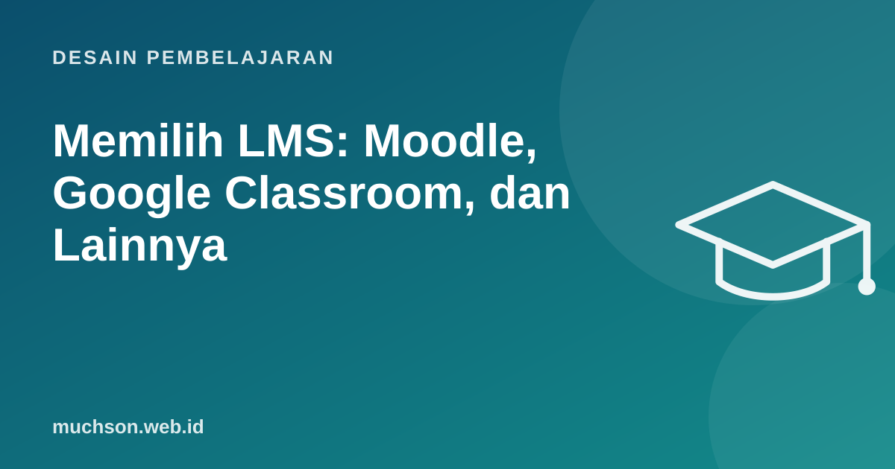

Beranda › Artikel › Desain Pembelajaran
Desain PembelajaranMemilih LMS: Moodle, Google Classroom, dan Lainnya
Memilih LMS sering dimulai dari daftar fitur yang panjang. Padahal pertanyaan yang lebih penting adalah: siapa penggunanya, siapa yang akan mengelolanya, dan apa yang benar-benar dibutuhkan dalam enam bulan pertama? LMS yang paling lengkap belum tentu yang paling dipakai.

Fungsi inti sebuah LMS
- Menyimpan dan mengatur materi per kursus atau kelas.
- Tugas, kuis, dan penilaian.
- Mendaftarkan peserta dan peran (pengajar, siswa, admin).
- Melacak kemajuan dan laporan.
- Komunikasi: pengumuman, forum, pesan.
- Integrasi: video, rapat daring, standar seperti SCORM, xAPI, atau LTI.
Perbandingan pilihan populer
| Platform | Cocok untuk | Kelebihan | Perhatikan |
|---|---|---|---|
| Google Classroom | Sekolah, guru perorangan | Sangat mudah, menyatu dengan Google Workspace | Fitur laporan dan kustomisasi terbatas |
| Moodle | Kampus, sekolah, lembaga pelatihan | Open source, sangat lengkap, banyak plugin | Butuh server dan admin yang paham |
| Canvas | Universitas | Antarmuka modern, integrasi kuat | Biaya lisensi untuk institusi |
| Platform kursus (Teachable, Thinkific, Kajabi) | Menjual kursus online | Pembayaran dan halaman penjualan bawaan | Biaya bulanan, kurang cocok untuk kelas formal |
| LMS korporat (Docebo, TalentLMS, dan lainnya) | Pelatihan karyawan | Laporan kepatuhan, integrasi HR | Biaya per pengguna |
| Buatan sendiri | Kebutuhan sangat khusus | Sesuai persis kebutuhan | Biaya pengembangan dan perawatan jangka panjang |
Pilih berdasarkan situasi Anda
Kriteria yang sering terlupakan
Uji dulu
Lakukan uji coba dengan satu kelas atau satu program nyata selama 4-6 minggu sebelum memutuskan untuk seluruh organisasi. Catat keluhan pengajar dan peserta.
Tanya jawab
Apa itu SCORM dan xAPI?
Standar agar modul e-learning bisa dipakai di berbagai LMS. SCORM lebih lama dan sangat umum; xAPI bisa mencatat kegiatan belajar di luar LMS juga.
Apakah LMS gratis cukup untuk lembaga kursus kecil?
Sering cukup. Yang penting materi tertata, ada kuis, dan peserta mudah mengakses. Tambah fitur ketika benar-benar dibutuhkan.
Perlukah membangun LMS sendiri?
Jarang. Membangun sendiri layak bila kebutuhan sangat khusus, misalnya playground interaktif yang tidak bisa dibuat di LMS umum. Alternatifnya, bangun komponen khusus lalu sematkan di LMS.
Sumber dan bacaan lanjut
- Moodle: About Moodle (dokumentasi resmi)
- Google for Education: Google Classroom
- 1EdTech: Learning Tools Interoperability (LTI)